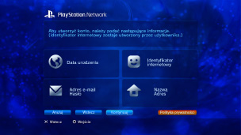

PlayStation™Network > Rejestracja
Rejestracja
Aby używać tej funkcji, może być konieczne zaktualizowanie oprogramowania systemowego.
PSNSM to usługa internetowa, w której można realizować zakupy online w sklepie  (PlayStation®Store), prowadzić rozmowy w obszarze
(PlayStation®Store), prowadzić rozmowy w obszarze  (Znajomi) i korzystać z różnych usług w sieci PSNSM. Do korzystania z usługi PSNSM niezbędne jest konto Sony Entertainment Network. Aby utworzyć konto, wybierz opcję
(Znajomi) i korzystać z różnych usług w sieci PSNSM. Do korzystania z usługi PSNSM niezbędne jest konto Sony Entertainment Network. Aby utworzyć konto, wybierz opcję  (Zapisz się) w kategorii
(Zapisz się) w kategorii  (PlayStation™Network), a następnie postępuj zgodnie z instrukcjami wyświetlanymi na ekranie.
(PlayStation™Network), a następnie postępuj zgodnie z instrukcjami wyświetlanymi na ekranie.

Główne elementy wymagane do utworzenia konta
| Informacje osobiste | Należy wprowadzić informacje dla zarejestrowanego użytkownika, w tym dzień, miesiąc i rok urodzenia oraz nazwisko użytkownika i adres. |
|---|---|
| Konto główne / Konto podrzędne | Istnieją dwa rodzaje kont: konta główne oraz konta podrzędne. Posiadacze kont głównych mogą ustalać określone warunki używania dla powiązanych kont podrzędnych. Konto główne: standardowe konto, które może utworzyć zarejestrowany użytkownik w określonym wieku lub starszy. Posiadacze kont głównych mogą ustalać określone warunki używania dla powiązanych kont podrzędnych. Konto podrzędne: użytkownicy niespełniający wymagań dla konta głównego w swoim regionie mogą używać tylko konta podrzędnego. Posiadacze kont podrzędnych nie mogą tworzyć portfeli, ale mogą korzystać z portfeli powiązanych kont głównych, aby płacić za produkty i usługi. Nie można utworzyć konta podrzędnego, jeśli nie istnieje powiązane konto główne. Uprawnienia do tworzenia kont głównych i kont podrzędnych różnią się w zależności od kraju lub regionu. Szczegółowe informacje na ten temat można znaleźć w witrynie internetowej SIE dla danego regionu. |
| Identyfikator wpisu (adres e-mail) | Zarejestruj identyfikator, który będzie używany podczas logowania się do sieci PSNSM. Użyj prawidłowego adresu e-mail, na który będą mogły być przysyłane wiadomości z potwierdzeniem, np. po dokonaniu zakupu w sklepie (PlayStation®Store). |
| Hasło |
Utwórz hasło według następujących wytycznych:
|
| Identyfikator internetowy |
Zarejestruj nazwę, która będzie wyświetlana w sieci PSNSM. Po utworzeniu identyfikatora online nie można go zmienić. Utwórz identyfikator online zgodnie z następującymi regułami:
|
Wskazówki
- Aby utworzyć konto podrzędne, odwiedź poniższą stronę internetową:
https://www.playstation.com/acct/family - W zależności od wieku osoby nieletniej do utworzenia konta podrzędnego wymagany może być komputer. Podczas tworzenia konta na adres e-mail powiązany z identyfikatorem logowania posiadacza konta głównego wysyłana jest wiadomość e-mail. Należy postępować zgodnie z instrukcjami zamieszczonymi w wiadomości e-mail, aby dokończyć rejestrację na komputerze.
- Aby można było zalogować się w sieci PSNSM przy użyciu utworzonego konta podrzędnego, musi ono zostać powiązane z użytkownikiem, który będzie się logować na konsoli PS3™. Więcej informacji można znaleźć w temacie [Korzystanie z istniejącego konta] w kategorii (PlayStation™Network) w niniejszej instrukcji.
- Identyfikator (adres e-mail) i hasło logowania nie będą jawnie wyświetlane. Nie należy udostępniać tych informacji innym osobom.
- Dla każdego użytkownika konsoli PS3™ można utworzyć tylko jedno konto. Aby utworzyć dodatkowe konta, należy przejść do kategorii
 (Użytkownicy) i utworzyć nowych użytkowników.
(Użytkownicy) i utworzyć nowych użytkowników. - Szczegółowe informacje na temat postępowania z osobistymi informacjami użytkowników można znaleźć w witrynie internetowej SIE dla danego regionu.
- Do uzyskania dostępu do usługi PSNSM wymagane jest szerokopasmowe połączenie z Internetem. Połączenie dial-up nie jest obsługiwane.
- Sieć PSNSM jest dostępna tylko w niektórych regionach i językach. Aby uzyskać szczegółowe informacje, skontaktuj się z działem pomocy technicznej w swoim regionie.
- Opcja (Zapisz się) jest wyświetlana tylko, gdy konto nie zostało utworzone.